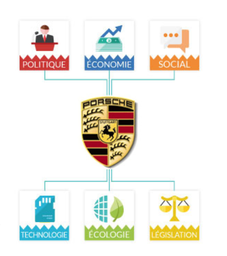

Analyse des Cinq Forces de porter pour Porsche
Menace des Nouveaux Entrants, des fournisseur, des acheteurs
**Menace des Nouveaux Entrants :**
Porsche bénéficie d'une faible menace des nouveaux entrants en raison de la difficulté à réaliser des économies d'échelle, de la forte différenciation des produits, des exigences en capital élevées, des coûts de recherche et développement importants, et des réglementations gouvernementales strictes.
Porsche bénéficie d'une faible menace des nouveaux entrants en raison de la difficulté à réaliser des économies d'échelle, de la forte différenciation des produits, des exigences en capital élevées, des coûts de recherche et développement importants, et des réglementations gouvernementales strictes.
**Pouvoir de Négociation des Fournisseurs :**
Porsche détient un pouvoir de négociation élevé envers ses fournisseurs en raison du nombre élevé de ces derniers, de la standardisation des produits, des coûts de changement de fournisseurs faibles, de l'absence de menace d'intégration en amont, et de la dépendance mutuelle.
Porsche détient un pouvoir de négociation élevé envers ses fournisseurs en raison du nombre élevé de ces derniers, de la standardisation des produits, des coûts de changement de fournisseurs faibles, de l'absence de menace d'intégration en amont, et de la dépendance mutuelle.
**Pouvoir de Négociation des Acheteurs :**
Les acheteurs ont un pouvoir de négociation relativement faible en raison du nombre limité de fournisseurs, de la différenciation des produits, de la complexité du changement de fournisseur, et de leurs revenus relativement faibles.
Les acheteurs ont un pouvoir de négociation relativement faible en raison du nombre limité de fournisseurs, de la différenciation des produits, de la complexité du changement de fournisseur, et de leurs revenus relativement faibles.

Menace des produits de substition, de rivalité entreprise et des implication globales
**Menace des Produits de Substitution :**
La menace des produits de substitution est faible en raison de la rareté de substituts de haute qualité et de leur coût élevé. Porsche peut contrer cette menace en se concentrant sur la qualité, la différenciation, et la compréhension des besoins des clients.
La menace des produits de substitution est faible en raison de la rareté de substituts de haute qualité et de leur coût élevé. Porsche peut contrer cette menace en se concentrant sur la qualité, la différenciation, et la compréhension des besoins des clients.
**Rivalité parmi les Entreprises Existantes :**
La rivalité entre les entreprises existantes est modérée en raison du nombre limité de concurrents, de la croissance de l'industrie, de la différenciation des produits, des barrières élevées à la sortie, et de la diversité des stratégies adoptées par les concurrents.
La rivalité entre les entreprises existantes est modérée en raison du nombre limité de concurrents, de la croissance de l'industrie, de la différenciation des produits, des barrières élevées à la sortie, et de la diversité des stratégies adoptées par les concurrents.
**Implications Globales :**
L'analyse des Cinq Forces de Porter guide les décisions stratégiques de Porsche, mettant l'accent sur l'innovation, la différenciation des produits, la gestion des relations avec les fournisseurs, la fidélisation des clients, et l'adaptation aux stratégies variées de ses concurrents.
L'analyse des Cinq Forces de Porter guide les décisions stratégiques de Porsche, mettant l'accent sur l'innovation, la différenciation des produits, la gestion des relations avec les fournisseurs, la fidélisation des clients, et l'adaptation aux stratégies variées de ses concurrents.
Analyse pestel pour Porsche
facteurs politique et economique
Dans cette analyse de l'environnement PESTEL du marché automobile, principalement en France, nous allons examiner successivement les influences politiques, économiques, sociales, technologiques, environnementales et légales qui ont un impact actuel ou potentiel sur l'ensemble du marché de l'automobile.
La stabilité politique et l'appartenance politique du président de la République sont des premiers éléments influençant le marché automobile. La couleur politique du gouvernement peut entraîner des choix en matière de politiques liées à l'automobile, comme des incitations économiques à la reprise de véhicules anciens. Ces incitations politiques ont un impact significatif sur le marché, en particulier pour les catégories de véhicules spécifiques, comme les véhicules électriques ou hybrides. De plus, les décisions politiques relatives aux confinements, couvre-feux et fermetures administratives des commerces non essentiels sont des facteurs clés pour le marché automobile.
Des éléments tels que la croissance économique, l'inflation, le taux de chômage et l'épargne des ménages français ont un impact potentiel sur le marché automobile. En période d'incertitude ou d'anxiété économique, les consommateurs ont tendance à augmenter leur épargne et à réduire leurs dépenses, ce qui peut se traduire par un report des décisions d'achat de véhicules.
Facteurs Sociaux, Technologiques, Écologiques et légaux
**Facteurs Sociaux**évolutions des modes de vie, la généralisation du télétravail et la préoccupation croissante pour l'environnement ont une influence sur le marché de l'automobile. Par exemple, la possibilité de télétravailler partiellement peut encourager les gens à déménager en dehors des grandes villes, ce qui peut influencer la demande de certains types de véhicules. De plus, l'importance accrue accordée à la préservation de l'environnement peut inciter les consommateurs à renouveler prématurément leur véhicule pour opter pour des modèles électriques ou hybrides. En outre, la popularité croissante du covoiturage et de la voiture partagée modifie également la dynamique du marché automobile.

**Facteurs Technologiques**
Les avancées technologiques telles que le développement des biocarburants, l'amélioration des batteries pour les véhicules électriques, la réduction des temps de recharge et l'amélioration des moteurs hybrides influent sur le marché automobile.
**Facteurs Écologiques**
La préoccupation croissante pour l'écologie a conduit à des changements de comportement des consommateurs, notamment en faveur des transports en commun, du vélo et de la trottinette, au détriment de la voiture. Parallèlement, les ventes de véhicules électriques et hybrides ont augmenté, reflétant l'intérêt croissant des consommateurs pour des solutions de transport moins polluantes. La recherche d'une production plus locale ou moins éloignée a également un impact sur le marché, favorisant les acteurs ayant décidé de relocaliser leur production en France ou en Europe.
**Facteurs Légaux**
L'entrée en vigueur du règlement européen RGPD a eu une forte influence sur le marché de l'automobile, obligeant les acteurs du marché à se conformer aux exigences européennes, entraînant des coûts et des tâches administratives considérables. Les lois et réglementations, telles que les limitations de vitesse, peuvent également influencer le marché. De même, les lois relatives à la concurrence et à la concentration sur le marché peuvent redistribuer les cartes, notamment dans un contexte de création de groupes toujours plus importants, comme Stellantis. Le marché de l'automobile est en constante évolution, soumis à de multiples facteurs internes et externes. La pandémie de COVID-19 a profondément perturbé le marché en 2020 et 2021, et le secteur s'efforce actuellement de renouer avec la croissance et de retrouver une dynamique positive.
SWOT
Analyse
| Forces |
|---|
| Forte reconnaissance de la marque |
| Produits de haute qualité et innovants |
| Gamme de produits diversifiée |
| Succès en sport automobile |
| Forte performance financière |
| Présence mondiale |
| Soutien du Groupe Volkswagen |
| Engagement développement durable |
| Faiblesses |
|---|
| Prix élevés |
| Dépendance à quelques modèles |
| Dépendance à l'égard de marchés spécifiques |
| Autonomie limitée de véhicules électriques |
| scandal des émissions de Volkswagen |
| Impact environnemental |
| Complexité de la chaîne d’approvisionnement |
| c'est porsche |
| Opportunités |
|---|
| Marché des véhicules électriques |
| Véhicules autonomes |
| Initiatives de développement durable |
| Marchés émergents |
| Numérisation et connectivité |
| Extension des services |
| Partenariats et collaborations |
| Menaces |
|---|
| Concurrence intense |
| Environnement réglementaire |
| Fluctuations économiques |
| Perturbation technologique |
| Perturbations de la chaîne d'approvisionnement |
| Risque de réputation |
| Transition vers les véhicules électriques |